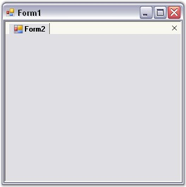

This section will explain how to create a TabbedMDIManager programmatically. It explains how to hookup the TabbedMDIManager to the MDIParent Form.
Here the main Form is assumed to be the MDIParent Form. Hence, any Form added to the main Form i.e. the MDIParent Form, will be treated as TabbedMDIChild Forms and will be displayed using the TabbedMDI look-and-feel, similar to Visual Studio .NET.
To create a TabbedMDIManager programmatically,
1. Create or open a Windows Forms project.
2. Add Syncfusion's Tools.Windows and Shared.Base assemblies to the application.
3. Add the Syncfusion.Windows.Forms.Tools namespace.
|
[C#]
using Syncfusion.Windows.Forms.Tools; |
|
[VB.NET]
Imports Syncfusion.Windows.Forms.Tools |
4. Declare the TabbedMDIManager in Form1.
|
[C#]
private TabbedMDIManager tb; |
|
[VB.NET]
Private WithEvents tb As tabbedMDIManager |
5. Initialize the TabbedMDIManager.
|
[C#]
public Form1() { InitializeComponent(); this.tb = new TabbedMDIManager(); } |
|
[VB.NET]
Public Sub New() tb = New TabbedMDIManager() End Sub |
6. Attach it to Form1 (MDIContainer). Make sure that the Form1's IsMdiContainer property is set to True. Now the TabbedMDI mode will be turned ON and any new MDIChildren created will be grouped as Tabs.
7. Switch to the design view. Add a new Form (Form2) to your application.
8. In the Form1_Load event, include the code snippet given below. This calls Form2 that is created and displays it in Form1.
|
[C#]
private void Form1_Load(object sender, System.EventArgs e) { this.IsMdiContainer=true; this.tb.AttachToMdiContainer(this); Form2 frm = new Form2(); frm.MdiParent=this; frm.Show(); } |
|
[VB.NET]
Private Sub Form1_Load(ByVal sender As System.Object, ByVal e As System.EventArgs) Handles MyBase.Load Me.IsMdiContainer=true Me.tb.AttachToMdiContainer(Me) Dim frm As Form2 = New Form2 frm.MdiParent = Me frm.Show() |
9. Run the application. You will see Form2 tabbed inside Form1.

Figure 1084: TabbedMDIManager Sample
See Also